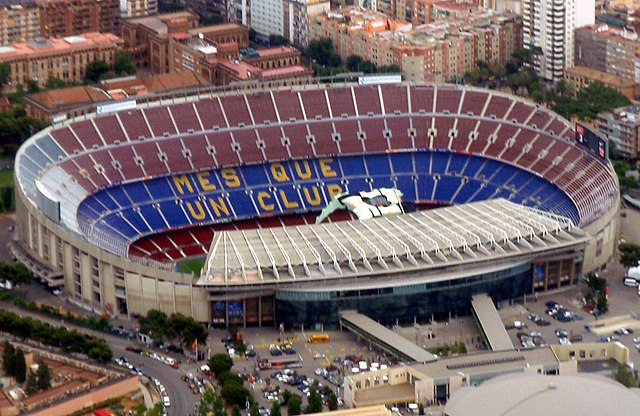
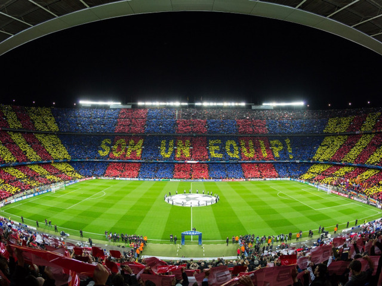

Barcelona, Spain
Barcelona is a beautiful city, with one of the most beautiful soccer stadiums in the world. This stadium, "Camp Nou," is where FC Barcelona plays all of their home games. It was built in 1957 and seats 99,354 fans making it the largest stadium in Europe.
The atmosphere of this stadium is known for being electric. Barcelona is home to some of the most devote fans and they will sing and chant all game long. They also often include the fans in "decorating" the stadium like in the picture below to give their team the best support they can.
